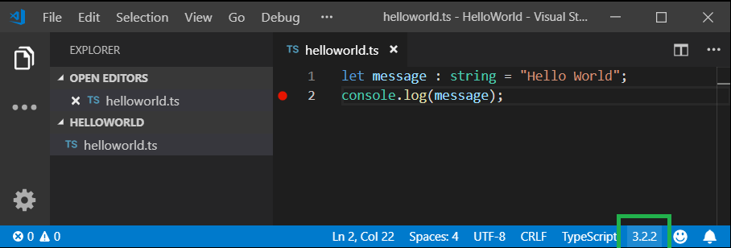
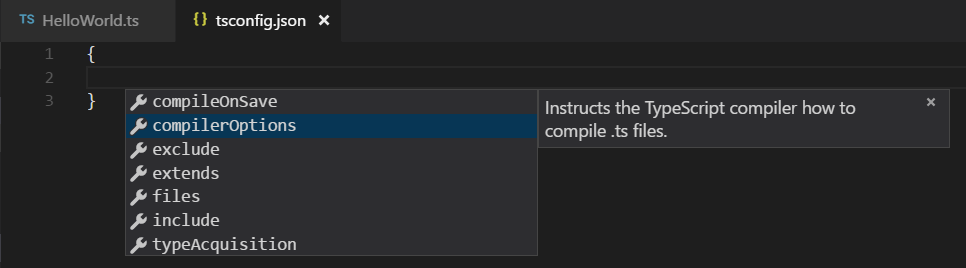
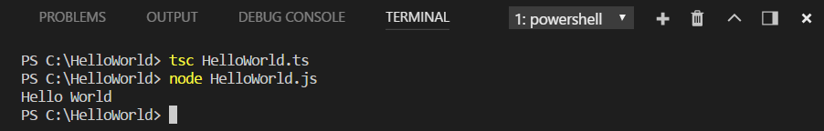
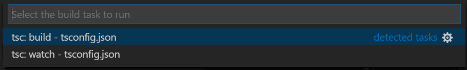
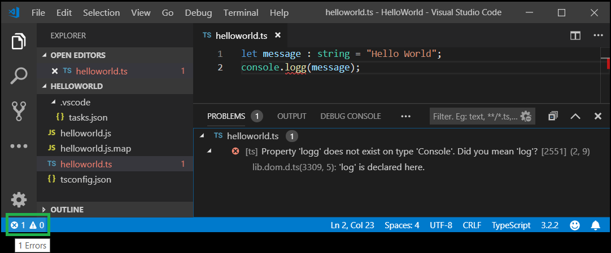
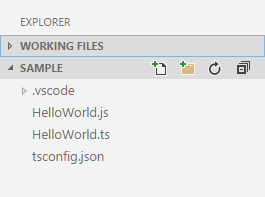
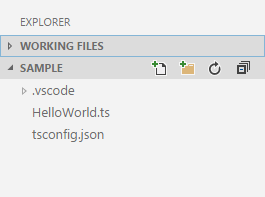
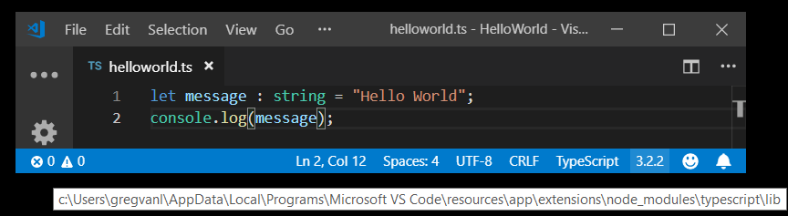

Compiling TypeScript
TypeScript is a typed superset of JavaScript that compiles to plain JavaScript. It offers classes, modules, and interfaces to help you build robust components. The TypeScript language specification has full details about the language.
Install the TypeScript compiler
Visual Studio Code includes TypeScript language support but does not include the TypeScript compiler, tsc. You will need to install the TypeScript compiler either globally or in your workspace to transpile TypeScript source code to JavaScript (tsc HelloWorld.ts).
The easiest way to install TypeScript is through npm, the Node.js Package Manager. If you have npm installed, you can install TypeScript globally (-g) on your computer by:
npm install -g typescript
You can test your install by checking the version or help.
tsc --version
tsc --help
Another option is to install the TypeScript compiler locally in your project (npm install --save-dev typescript) and has the benefit of avoiding possible interactions with other TypeScript projects you may have.
Compiler versus language service
It is important to keep in mind that VS Code's TypeScript language service is separate from your installed TypeScript compiler. You can see the VS Code's TypeScript version in the Status Bar when you open a TypeScript file.

Later in the article, we'll discuss how you can change the version of TypeScript language service that VS Code uses.
tsconfig.json
Typically the first step in any new TypeScript project is to add a tsconfig.json file. A tsconfig.json file defines the TypeScript project settings, such as the compiler options and the files that should be included. To do this, open up the folder where you want to store your source and add a new file named tsconfig.json. Once in this file, IntelliSense (kb(editor.action.triggerSuggest)) will help you along the way.

A simple tsconfig.json looks like this for ES5, CommonJS modules and source maps:
{
"compilerOptions": {
"target": "es5",
"module": "commonjs",
"sourceMap": true
}
}
Now when you create a .ts file as part of the project we will offer up rich editing experiences and syntax validation.
Transpile TypeScript into JavaScript
VS Code integrates with tsc through our integrated task runner. We can use this to transpile .ts files into .js files. Another benefit of using VS Code tasks is that you get integrated error and warning detection displayed in the Problems panel. Let's walk through transpiling a simple TypeScript Hello World program.
Step 1: Create a simple TS file
Open VS Code on an empty folder and create a helloworld.ts file, place the following code in that file...
let message : string = "Hello World";
console.log(message);
To test that you have the TypeScript compiler tsc installed correctly and a working Hello World program, open a terminal and type tsc helloworld.ts. You can use the Integrated Terminal (kb(workbench.action.terminal.toggleTerminal)) directly in VS Code.
You should now see the transpiled helloworld.js JavaScript file, which you can run if you have Node.js installed, by typing node helloworld.js.

Step 2: Run the TypeScript build
Execute Run Build Task (kb(workbench.action.tasks.build)) from the global Terminal menu. If you created a tsconfig.json file in the earlier section, this should present the following picker:

Select the tsc: build entry. This will produce a HelloWorld.js and HelloWorld.js.map file in the workspace.
If you selected tsc: watch, the TypeScript compiler watches for changes to your TypeScript files and runs the transpiler on each change.
Under the covers, we run the TypeScript compiler as a task. The command we use is: tsc -p .
Step 3: Make the TypeScript Build the default
You can also define the TypeScript build task as the default build task so that it is executed directly when triggering Run Build Task (kb(workbench.action.tasks.build)). To do so, select Configure Default Build Task from the global Terminal menu. This shows you a picker with the available build tasks. Select TypeScript tsc: build, which generates the following tasks.json file in a .vscode folder:
{
// See https://go.microsoft.com/fwlink/?LinkId=733558
// for the documentation about the tasks.json format
"version": "2.0.0",
"tasks": [
{
"type": "typescript",
"tsconfig": "tsconfig.json",
"problemMatcher": [
"$tsc"
],
"group": {
"kind": "build",
"isDefault": true
}
}
]
}
Notice that the task has a group JSON object that sets the task kind to build and makes it the default. Now when you select the Run Build Task command or press (kb(workbench.action.tasks.build)), you are not prompted to select a task and your compilation starts.
Tip: You can also run the program using VS Code's Run/Debug feature. Details about running and debugging Node.js applications in VS Code can be found in the Node.js tutorial
Step 4: Reviewing build issues
The VS Code task system can also detect build issues through a problem matcher. A problem matcher parses build output based on the specific build tool and provides integrated issue display and navigation. VS Code ships with many problem matchers and $tsc seen above in tasks.json is the problem matcher for TypeScript compiler output.
As an example, if there was a simple error (extra 'g' in console.log) in our TypeScript file, we may get the following output from tsc:
HelloWorld.ts(3,17): error TS2339: Property 'logg' does not exist on type 'Console'.
This would show up in the terminal panel (kb(workbench.action.terminal.toggleTerminal)) and selecting the Tasks - build tsconfig.json in the terminal view dropdown.
You can see the error and warning counts in the Status Bar. Click on the error and warnings icon to get a list of the problems and navigate to them.

You can also use the keyboard to open the list kb(workbench.actions.view.problems).
Tip: Tasks offer rich support for many actions. Check the Tasks topic for more information on how to configure them.
JavaScript source map support
TypeScript debugging supports JavaScript source maps. To generate source maps for your TypeScript files, compile with the --sourcemap option or set the sourceMap property in the tsconfig.json file to true.
In-lined source maps (a source map where the content is stored as a data URL instead of a separate file) are also supported, although in-lined source is not yet supported.
Output location for generated files
Having the generated JavaScript file in the same folder at the TypeScript source will quickly get cluttered on larger projects. You can specify the output directory for the compiler with the outDir attribute.
{
"compilerOptions": {
"target": "es5",
"module": "commonjs",
"outDir": "out"
}
}
Hiding derived JavaScript files
When you are working with TypeScript, you often don't want to see generated JavaScript files in the File Explorer or in Search results. VS Code offers filtering capabilities with a files.exclude workspace setting and you can easily create an expression to hide those derived files:
**/*.js: { "when": "$(basename).ts" }
This pattern will match on any JavaScript file (**/*.js) but only if a sibling TypeScript file with the same name is present. The File Explorer will no longer show derived resources for JavaScript if they are compiled to the same location.
 
Add the files.exclude setting with a filter in the workspace settings.json file, located in the .vscode folder at the root of the workspace. You can open the workspace settings.json via the Preferences: Open Workspace Settings (JSON) command from the Command Palette (kb(workbench.action.showCommands)).
To exclude JavaScript files generated from both .ts and .tsx source files, use this expression:
"files.exclude": {
"**/*.js": { "when": "$(basename).ts" },
"**/**.js": { "when": "$(basename).tsx" }
}
This is a bit of a trick. The search glob pattern is used as a key. The settings above use two different glob patterns to provide two unique keys but the search will still match the same files.
Using newer TypeScript versions
VS Code ships with a recent stable version of the TypeScript language service and uses this by default to provide IntelliSense in your workspace. The workspace version of TypeScript is independent of the version of TypeScript you use to compile your *.ts files. You can just use VS Code's built-in TypeScript version for IntelliSense without worry for most common cases, but sometimes you may need to change the version of TypeScript VS Code uses for IntelliSense.
Reasons for doing this include:
- Trying out the latest TypeScript features by switching to the TypeScript nightly build (
typescript@next). - Making sure you are using the same version of TypeScript for IntelliSense that you use to compile your code.
The active TypeScript version and its install location are displayed in the Status Bar when viewing a TypeScript file:

You have a few options if you want to change the default version of TypeScript in your workspace:
Using the workspace version of TypeScript
If your workspace has a specific TypeScript version, you can switch between the workspace version of TypeScript and the version that VS Code uses by default by opening a TypeScript or JavaScript file and clicking on the TypeScript version number in the Status Bar. A message box will appear asking you which version of TypeScript VS Code should use:

Use this to switch between the version of TypeScript that comes with VS Code and the version of TypeScript in your workspace. You can also trigger the TypeScript version selector with the TypeScript: Select TypeScript Version command.
VS Code will automatically detect workspace versions of TypeScript that are installed under node_modules in the root of your workspace. You can also explicitly tell VS Code which version of TypeScript to use by configuring the typescript.tsdk in your user or workspace settings. The typescript.tsdk setting should point to a directory containing the TypeScript tsserver.js file. You can find the TypeScript installation location using npm list -g typescript. The tsserver.js file is usually in the lib folder.
For example:
{
"typescript.tsdk": "/usr/local/lib/node_modules/typescript/lib"
}
Tip: To get a specific TypeScript version, specify
@versionduring npm install. For example, for TypeScript 3.6.0, you would usenpm install --save-dev typescript@3.6.0. To preview the next version of TypeScript, runnpm install --save-dev typescript@next.
Note that while typescript.tsdk points to the lib directory inside of typescript in these examples, the typescript directory must be a full TypeScript install that contains the TypeScript package.json file.
You can also tell VS Code to use a specific version of TypeScript in a particular workspace by adding a typescript.tsdk workspace setting pointing to the directory of the tsserver.js file:
{
"typescript.tsdk": "./node_modules/typescript/lib"
}
The typescript.tsdk workspace setting only tells VS Code that a workspace version of TypeScript exists. To actually start using the workspace version for IntelliSense, you must run the TypeScript: Select TypeScript Version command and select the workspace version.
Using TypeScript nightly builds
The simplest way to try out the latest TypeScript features in VS Code is to install the JavaScript and TypeScript Nightly extension.
This extension automatically replaces VS Code's built-in TypeScript version with the latest TypeScript nightly build. Just make sure you switch back to using VS Code's TypeScript version if you've configured your TypeScript version with the TypeScript: Select TypeScript Version command.
Mixed TypeScript and JavaScript projects
It is possible to have mixed TypeScript and JavaScript projects. To enable JavaScript inside a TypeScript project, you can set the allowJs property to true in the tsconfig.json.
Tip: The
tsccompiler does not detect the presence of ajsconfig.jsonfile automatically. Use the–pargument to maketscuse yourjsconfig.jsonfile, e.g.tsc -p jsconfig.json.
Working with large projects
If you are working in a codebase with hundreds or thousands of TypeScript files, here are some steps you can take to improve both the editing experience in VS Code as well as compile times on the command line.
Make sure your tsconfig only includes files you care about
Use include or files in your project's tsconfig.json to make sure the project only includes the files that should be part of the project.
More information on configuring your project's tsconfig.json.
Break up your project using project references
Instead of structuring your source code as a single large project, you can improve performance by breaking it up into smaller projects using project references. This allows TypeScript to load just a subset of your codebase at a time, instead of loading the entire thing.
See the TypeScript documentation for details on how to use project references and best practices for working with them.
Next steps
Read on to find out about:
- Debugging TypeScript - Configure the debugger for your TypeScript project.
Common questions
How do I resolve a TypeScript "Cannot compile external module" error?
If you get that error, resolve it by creating a tsconfig.json file in the root folder of your project. The tsconfig.json file lets you control how Visual Studio Code compiles your TypeScript code. For more information, see the tsconfig.json overview.
Why do I get different errors and warnings with VS Code than when I compile my TypeScript project?
VS Code ships with a recent stable version of the TypeScript language service and it may not match the version of TypeScript installed globally on your computer or locally in your workspace. For that reason, you may see differences between your compiler output and errors detected by the active TypeScript language service. See Using newer TypeScript versions for details on installing a matching TypeScript version.
Can I use the version of TypeScript that ships with VS 2015?
No, the TypeScript language service that ships with Visual Studio 2015 and 2017 isn't compatible with VS Code. You will need to install a separate version of TypeScript from npm.
Why are some errors reported as warnings?
By default, VS Code TypeScript displays code style issues as warnings instead of errors. This applies to:
- Variable is declared but never used
- Property is declared but its value is never read
- Unreachable code detected
- Unused label
- Fall through case in switch
- Not all code paths return a value
Treating these as warnings is consistent with other tools, such as TSLint. These will still be displayed as errors when you run tsc from the command line.
You can disable this behavior by setting "typescript.reportStyleChecksAsWarnings": false in your User settings.